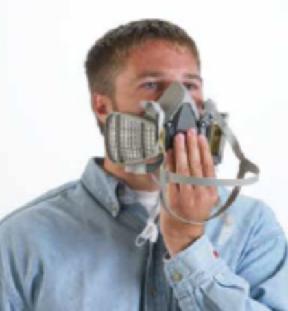
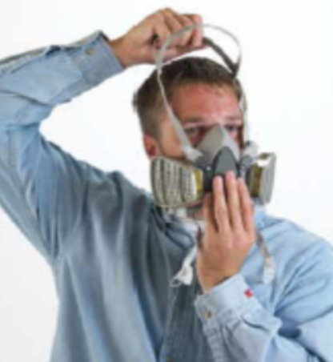
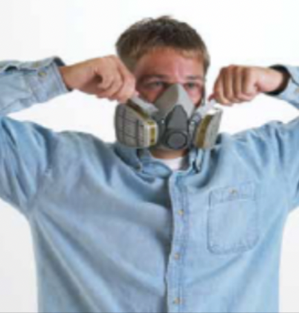
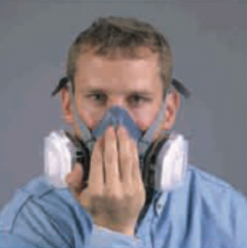
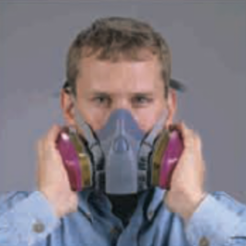

Coloque el respirador cubriendo la boca y la nariz, con las correas sueltas.
Respirador de media cara con cartuchos 3M 6003 para gases ácidos/vapores orgánicos y pre-filtro para polvos.

Coloque el respirador cubriendo la boca y la nariz, con las correas sueltas.

Pase la correa superior sobre la cabeza, colocando el arnés para la cabeza sobre su coronilla.
Enganche las correas inferiores detrás del cuello.

Ajuste la tensión de las correas hasta obtener un ajuste correcto.

Cubra con la mano la abertura de la tapa de la válvula de exhalación.
Exhale suavemente.
Si la pieza facial se expande levemente y no se sienten fugas entre la cara y la pieza, el ajuste es correcto.

Con cartuchos
Cubra el cartucho con las palmas de las manos para restringir el flujo de aire.
Inhale suavemente. Si la pieza facial se contrae levemente y no se sienten fugas entre la cara y la pieza, el ajuste es correcto.